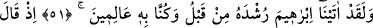
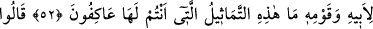
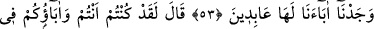
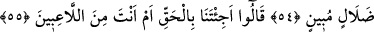
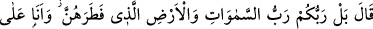
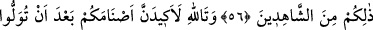
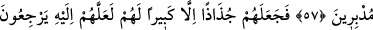
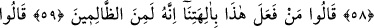
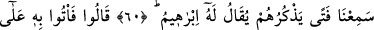
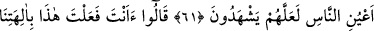
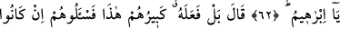
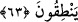
BABALARIMIZI PUTLARA
TAPAR BULDUK
51. Andolsun biz İbrahim’e daha önce rüşdünü vermiştik. Biz onu iyi tanırdık.
52. O, babasına ve kavmine: “Şu karşısına geçip tapmakta olduğunuz heykeller
de ne oluyor?” demişti.
53. Dediler ki: “Biz, babalarımızı bunlara tapar kimseler bulduk.”
54. “Doğrusu, siz de, babalarınız da açık bir sapıklık içindesiniz.” dedi.
55. Dediler ki: “Bize gerçeği mi getirdin, yoksa sen oyunbazlardan biri misin?”
56. “Hayır, sizin Rabbiniz, yarattığı göklerin ve yerin de Rabbidir ve ben buna
şahitlik edenlerdenim.” dedi.
57. Allâh’a yemin ederim ki, siz ayrılıp gittikten sonra putlarınıza bir oyun
oynayacağım!
58. Sonunda İbrahim onları paramparça etti. Yalnız onların büyüğünü bıraktı;
belki ona müracaat ederler diye.
59. “Bunu ilahlarımıza kim yaptı? Muhakkak o, zalimlerden biridir.” dediler.
60. (Bir kısmı:) “Bunları diline dolayan bir genç duyduk; kendisine İbrahim
denilirmiş.” dediler.
61. “O halde, onu hemen insanların gözü önüne getirin. Belki şahitlik ederler.”